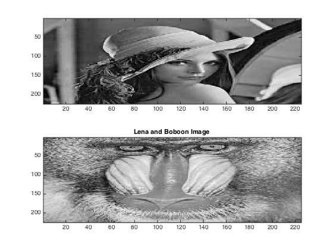
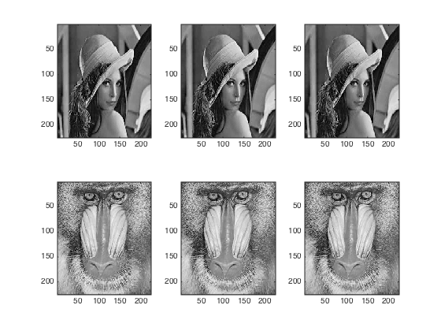
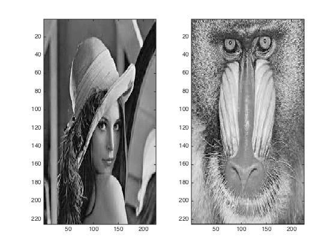
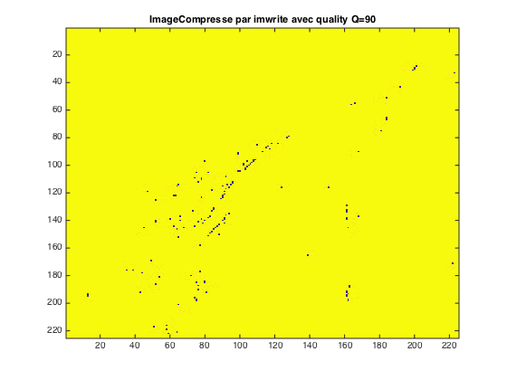
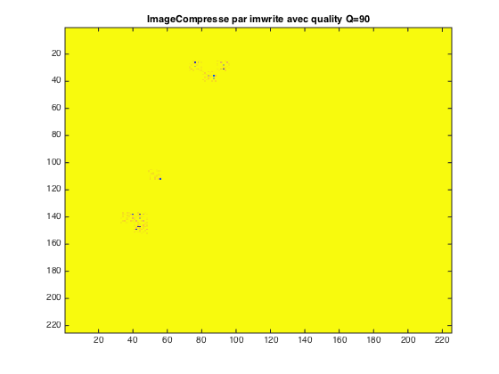
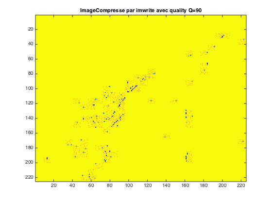

Contents
%************************************************************************ %* Mami FOFANA M23IR %* SECURITE TPN°1 %************************************************************************ clc clear all close all
lecture image
Objective : cacher image dans une image
lena = imread('lena.jpg'); baboon = imread('baboon.jpg'); lena = rgb2gray(lena); baboon = rgb2gray(baboon); lena = double(lena); baboon = double(baboon); figure subplot(2,1,1) imagesc(lena); % pixel de l'image ds 0 -255 subplot(2,1,2) imagesc(baboon); colormap(gray); title('Lena and Boboon Image ')
Change LSB
comment peut on acceder le bit le poid le plus flaible dans l'image
lenaMod2 = mod(lena,2); % modulo 2 ie reste ==> lsb de lena baboonMod2 = mod(baboon,2); lena_lsb_0 = lena - lenaMod2; lena_lsb_1 = lena - lenaMod2 + 1; %lena_lsb_0 + 1 ie lsb0 -1 + 1 => lsb + 0; baboon_lsb_0 = baboon - baboonMod2 ; baboon_lsb_1 = baboon - baboonMod2 + 1; figure %lena subplot(2,3,1) imagesc(lena); % pixel de l'image ds 0 -255 subplot(2,3,2) imagesc(lena_lsb_0); subplot(2,3,3) imagesc(lena_lsb_1); %baboon subplot(2,3,4) imagesc(baboon); subplot(2,3,5) imagesc(baboon_lsb_0); subplot(2,3,6) imagesc(baboon_lsb_1); colormap(gray);
Devoir TP1
%lena- baboon-lsb : ie lsb de baboon dans lena %NB : baboonMod2 = lsbBaboon && lenaMod2 = lsb(lena) lena_baboon_lsb = lena - lenaMod2 + baboonMod2; %On soustrait lsb de lana puis ajouter lsb de baboon baboon_lena_lsb = baboon - baboonMod2 + lenaMod2; %On soustrait lsb de lana puis ajouter lsb de baboon figure subplot(1,2,1) imagesc(lena_baboon_lsb); % pixel de l'image ds 0 -255 subplot(1,2,2) imagesc(baboon_lena_lsb); colormap(gray);
Mesure de qualité d'image ==> PSNR
H=512;
W=H;
PSNR_Lena = 10.*log10((H*W*max(max(lena.^2)))./(sum(sum(lena-lena_lsb_0).^2)))
PSNR_Baboon = 10.*log10((H*W*max(max(baboon.^2)))./(sum(sum(baboon-baboon_lsb_0).^2)))
PSNR_lena_baboon_lsb = 10.*log10((H*W*max(max(lena.^2)))./(sum(sum(lena-lena_baboon_lsb).^2)))
PSNR_baboon_lena_lsb = 10.*log10((H*W*max(max(baboon.^2)))./(sum(sum(baboon-baboon_lena_lsb).^2)))
PSNR_baboon_lena = 10.*log10((H*W*max(max(baboon.^2)))./(sum(sum(baboon-lena).^2)))
PSNR_lena_baboon = 10.*log10((H*W*max(max(baboon.^2)))./(sum(sum(baboon-lena).^2)))
%Remarque: cette mesure est base sur erreur quadratique moyenne.
PSNR_Lena = 37.3923 PSNR_Baboon = 36.6385 PSNR_lena_baboon_lsb = 57.3047 PSNR_baboon_lena_lsb = 56.5619 PSNR_baboon_lena = -1.4474 PSNR_lena_baboon = -1.4474
Normalize Cross - correlation
NCClena = sum(sum(lena.*lena_lsb_0))./sum(sum(lena.^2)) NCCbaboon = sum(sum(baboon.*baboon_lsb_0))./sum(sum(baboon.^2)) NCClena_baboon_lsb = sum(sum(lena.*lena_baboon_lsb))./sum(sum(lena.^2)) NCCbaboon_lena_lsb = sum(sum(baboon.*baboon_lena_lsb))./sum(sum(baboon.^2)) NCClena_baboon = sum(sum(lena.*baboon))./sum(sum(lena.^2)) NCCbaboon_lena = sum(sum(baboon.*lena))./sum(sum(baboon.^2))
NCClena =
0.9961
NCCbaboon =
0.9965
NCClena_baboon_lsb =
1.0000
NCCbaboon_lena_lsb =
1.0000
NCClena_baboon =
1.0201
NCCbaboon_lena =
0.6924
Tableau Comparatif entre PSNR & NCC
%************************************************************************ %********** TABLEAU RECAPUTULATIF ENTRE PSNR & NCC ********************* %************************************************************************** % S: lena ** ** ** % Screte : lena_lsb_0 ** 37.3923 ** 0.9961 ** % ** ** ** %************************************************************************** % S: Baboon ** ** ** % Screte : baboon_lsb_0 s ** 36.6385 ** 0.996 ** % ** ** ** %************************************************************************** % ** ** ** % S: lena ** 57.3047 ** 1.0000 ** % Screte: lalna_baboon_lsb ** ** ** %************************************************************************** % ** ** ** % S: baboon ** 56.5619 ** 1.00 ** % Screte:baboon_lena_lsb ** ** ** %************************************************************************** % ** ** ** % S :baboon ** -1.4474 ** 0.6924 ** % Screte: lena ** ** ** %************************************************************************** % ** ** ** % S :lena ** -1.4474 ** 1.0201 ** % Screte: baboon ** ** ** %**************************************************************************
Fonctiom imwrite()
imwrite(A,'Imagecompressee.jpg','quality',90); A =uint8(Image) ==> en uint8 Imagecompressee.jpg : le fichier creer apres l'éxecution du programme Avec un facteur de qualite de 90
Test imwrite Q=90
B = lena; imwrite(B,'imageCompresse.jpg','quality',90) result = imread('imageCompresse.jpg'); figure imagesc(result); title('ImageCompresse par imwrite avec quality Q=90')
Test imwrite Q=50
C= baboon; imwrite(C,'imageCompresseQ50.jpg','quality',50) result2 = imread('imageCompresseQ50.jpg'); figure imagesc(result2); title('ImageCompresse par imwrite avec quality Q=90')
Test imwrite Q= 30
imwrite(B,'imageCompresseQ30.jpg','quality',30) result3 = imread('imageCompresseQ30.jpg'); figure imagesc(result3); title('ImageCompresse par imwrite avec quality Q=90')